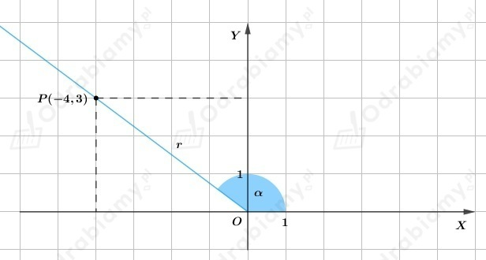
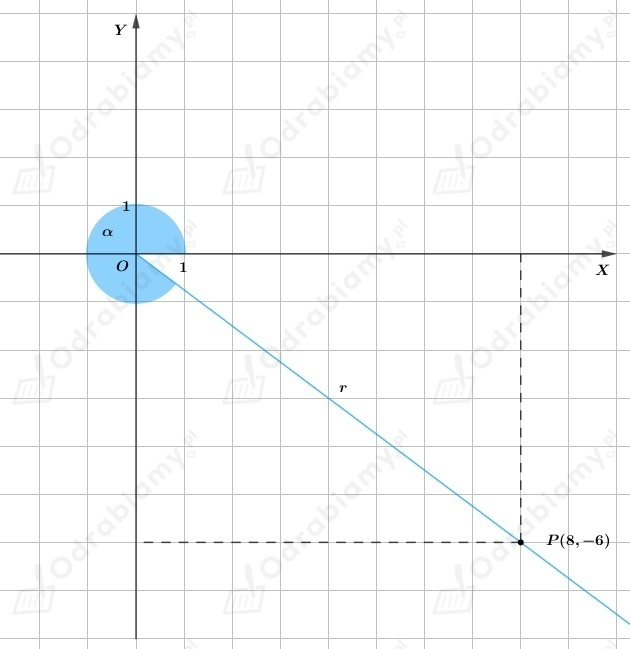
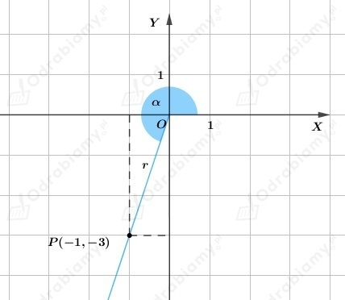
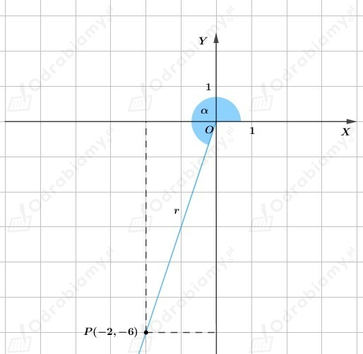
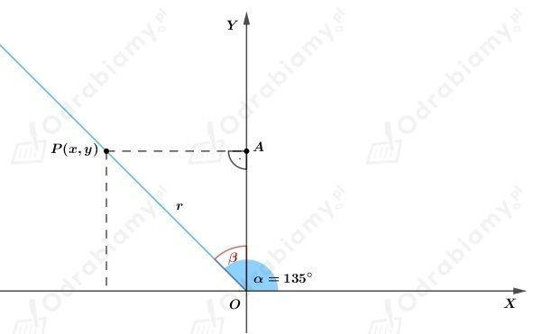
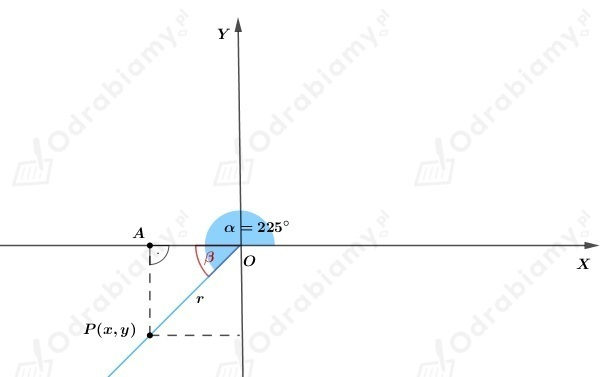
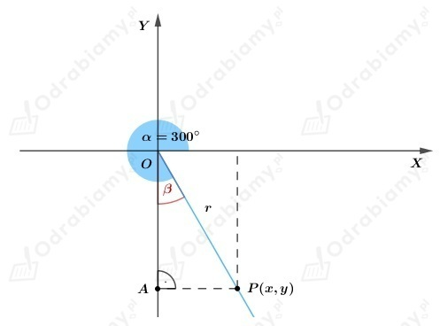

| Przypomnijmy definicję funkcji trygonometrycznych dowolnego kąta. Niech P(x,y) będzie dowolnym punktem, różnym od początku układu współrzędnych, leżącym na ramieniu końcowym kąta 𝛼 ∈ ⟨0°; 360°〉. Wtedy:
gdzie
|
a)
Z treści zadania wiemy, że do ramienia końcowego kąta 𝛼 należy punkt P(-4,3).

Wartości funkcji trygonometrycznych
b)
Z treści zadania wiemy, że do ramienia końcowego kąta 𝛼 należy punkt P(8,-6).

Wartości funkcji trygonometrycznych
c)
Z treści zadania wiemy, że do ramienia końcowego kąta 𝛼 należy punkt P(-1,-3).

Wartości funkcji trygonometrycznych
d)
Z treści zadania wiemy, że do ramienia końcowego kąta 𝛼 należy punkt P(-2,-6).

Wartości funkcji trygonometrycznych
a)
Z treści zadania wiemy, że 𝛼=135º.
Przyjmijmy oznaczenia jak na rysunku poniżej

Z rysunku zauważamy, że współrzędne punktu P należącego do ramienia końcowego mają następujące znaki
Do wyznaczenia wartości funkcji trygonometrycznych potrzeba znajomość współrzędnych punktu P (dowolnego punktu leżącego na ramieniu końcowym kąta 𝛼).
Zatem przyjmijmy, że y=1 i obliczmy wartość pierwszej współrzędnej punktu P.
Zauważamy, że ΔOAP jest trójkątem prostokątnym równoramiennym, ponieważ
to wnioskujemy, że ∢OPA również ma miarę 45º, więc y=|OA|=|AP|=1.
Otrzymujemy, że x=-1.
Mając współrzędne punktu P możemy obliczyć r.
Wartości funkcji trygonometrycznych
b)
Z treści zadania wiemy, że 𝛼=225º.
Przyjmijmy oznaczenia jak na rysunku poniżej

Z rysunku zauważamy, że współrzędne punktu P należącego do ramienia końcowego mają następujące znaki
Do wyznaczenia wartości funkcji trygonometrycznych potrzeba znajomość współrzędnych punktu P (dowolnego punktu leżącego na ramieniu końcowym kąta 𝛼).
Zatem przyjmijmy, że x=-1 i obliczmy wartość drugiej współrzędnej punktu P.
Zauważamy, że ΔOAP jest trójkątem prostokątnym równoramiennym, ponieważ
to wnioskujemy, że ∢OPA również ma miarę 45º, więc |OA|=|AP|=1.
Otrzymujemy, że y=-1.
Mając współrzędne punktu P możemy obliczyć r.
Wartości funkcji trygonometrycznych
c)
Z treści zadania wiemy, że 𝛼=300º.
Przyjmijmy oznaczenia jak na rysunku poniżej

Z rysunku zauważamy, że współrzędne punktu P należącego do ramienia końcowego mają następujące znaki
Do wyznaczenia wartości funkcji trygonometrycznych potrzeba znajomość współrzędnych punktu P (dowolnego punktu leżącego na ramieniu końcowym kąta 𝛼).
Zatem przyjmijmy, że y=-1 i obliczmy wartość pierwszej współrzędnej punktu P.
Zauważamy, że ΔOAP jest trójkątem prostokątnym
to wnioskujemy, że ∢OPA również ma miarę 60º, więc korzystając z własności trójkąta o kątach 30°, 60°, 90° dostajemy
Mając współrzędne punktu P możemy obliczyć r.
Wartości funkcji trygonometrycznych